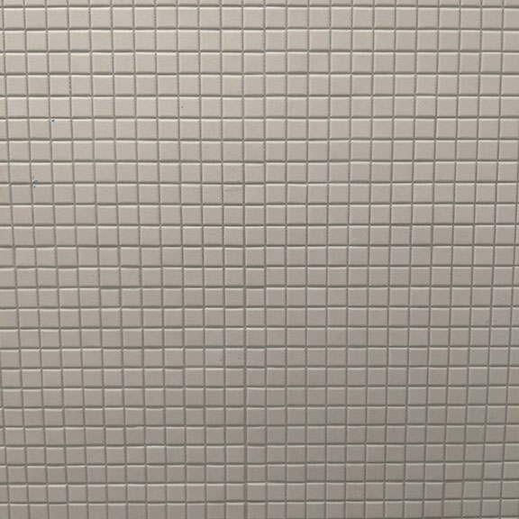
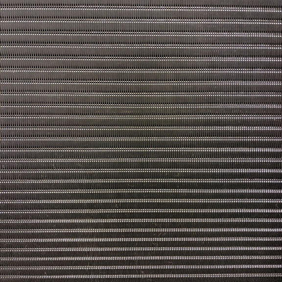
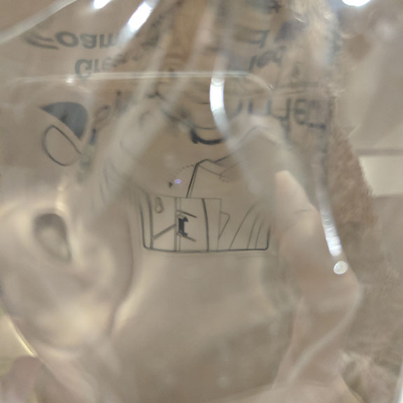

Our cultural landscape is now rife with references to digital visualizations, such as pixelization or the plastic colors and stiff lines of digital rendering. And the boundary between the “virtual” and the “real” is often blurred.